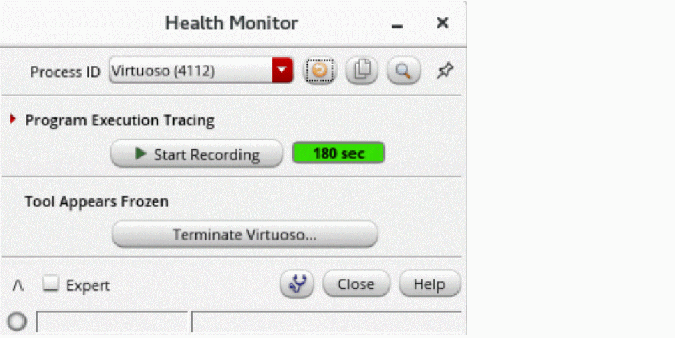

Health Monitor Overview
The Health Monitor in the Diagnostic Center provides information on the tool insight to help you set up the Virtuoso for better performance. It contains an indicator that turns yellow or red, with a performance tip when the current session slows down. It also monitors the system resources utilized by Virtuoso and other tools to identify potential external factors.
Additionally, this tool provides an option to record callstacks for reporting the slowness issue.These callstacks are then analyzed further and a high-level summary is created. If the Cadence support team is unable to reproduce the issue based on your problem description, this summary makes it easier for them to narrow down the causes or even provide an immediate workaround. The support team might ask further questions or provide instructions on using other diagnostic techniques available in this tool.
A callstack is a snapshot of the internal function calls during program execution. A series of callstacks within the issue duration (profiling) can give the Cadence support team insights about where the most time is spent.
To open the Health Monitor form,
- Open the Tools menu in CIW and choose Diagnostic Center.
-
In the Performance tab, select Health Monitor.
The Health Monitor form appears.
Alternatively, you can use the shell command cdsPerfDiag -p <pid> to open the Health Monitor when virtuoso stops responding or search freeze in CDS.log for this command. To open the Health Monitor at startup, set the launchUI environment variable.
This utility is installed by default through perf installAtStartup environment variable.
The installAtStartup environment variable is ignored when Virtuoso replays the command file, and this stops the installation of Health Monitor. If you want to install it when Virtuoso replays the command file, set the shell environment setenv CDS_PERFDIAG_TEST.
Set the shell environment setenv CDS_PERFDIAG_DISABLE, if the regression test is not based on replay commands and you want to disable the installation to prevent impacting the regression test.
From the Health Monitor form, you can access the Health Monitor (Advanced) form. This form provides performance insights and tips to debug the issues in the current Virtuoso session. It plots CPU and Memory charts consumed by Virtuoso and other processes, with historical system statistics to identify the external factors. You can also open the CDS.log augmented with events to debug the issues when the traffic light turns yellow or red over a long period.
To open the Health Monitor (Advanced) form,
Related Topics
Health Monitor (Advanced) Form
Collecting Data Using Health Monitor Tool
Return to top